PROCESS

OVERVIEW
Introduction
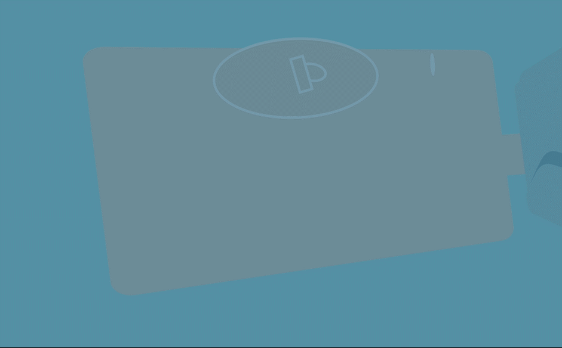
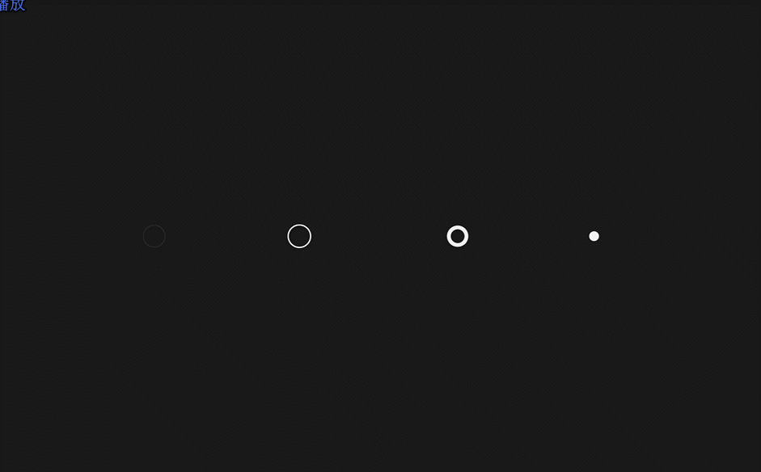
Road of Digital Media is an animation short about a boy finding himself. Motions graphics is used as the major method to depict the physical journey and mental journey of the protagonist Xiao Juan. Xiao Juan is a diligent student not knowing what he really wants. Feeling lost in the mist of homework and classes, he starts to question who he is and what he wants. As a digital media student, he tries to combine the diversity of his major with his self, to find his place to move the earth. The animation has been highly recognized by teachers and won the Grand Prize of Xiamen University Digital Media Creative Works Competition.
My Roles
Team Leader, Animation Designer, Animator, Script Writer
Tools
Adobe Illustrator, Photoshop, Premiere, After Effect
PROCESS
Animation Interpretation
Animation Design
Stage one: Xiao Juan’s physical life


At the beginning of story, Xiao Juan gets up, brushes his teeth, goes to school, does coding and draws story broad. This is actually the daily life of an ordinary digital media student. The protagonist gets up early, hops to school and works hard to finish his homework, which shows that he is a very positive person and has unlimited enthusiasm for his major. But in his day-to-day efforts, he has never seen a clear direction, so he feels powerless and puzzled and asks, "where is the road to my dream ".


There is a scene where our character falls into the sea; and "sea" appeared many times in the animation. On the one hand, the image of the "sea" is a metaphor for the wide span and rich contents of the digital media major itself, and on the other hand, floating in the sea indicates that Xiao Juan experiences confusion and unknown.
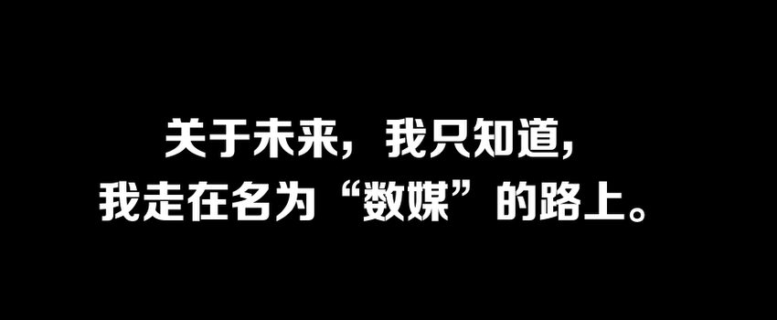
At the end of the stage one, the protagonist realizes that he has been on the road of digital media, which makes his confusion clearer, and then triggers a new round of thinking about what digital media is and where it can lead him.
Stage two: Xiao Juan’s mental journey


With regard to the question of "what is digital media", the first thing Xiao Juan thought about was the courses related to digital media he studied, such as "interaction" and "C++ programming". However, these pronouns cannot contain the meaning of "digital media", nor can they express his love for digital media. Therefore, the protagonist said very romantically, "it makes the signals of the real world spark the infinite light of the virtual world”.


After thinking about the nature of digital media, the protagonist returns to his original question, what is the relationship between "digital media" and "self". It becomes gradually clear that the present self, in fact, is the reflection of "past self". The experience in life, the interests from childhood, individual personality and specialty, etc., actually not only make one look like one is, but also show the direction of the future. Where is the future? In fact, one can see the shadow from the present. Where is the road of digital media? Actually, the question can be answered by one’s inner self.


What can be done now is to keep learning and keep forging ahead, so that efforts can accumulate and precipitate, and eventually lead to qualitative change. So in the end, the protagonist said, "As I grew up, the accumulated experience, honed technology and the burst out of creativity all gathered into the power of dreams, which rolls, boils and flies my heart.". He believes that as long as he sticks to the original intention and forge ahead, he can find his own place and realize his dream.
Emotional Curve
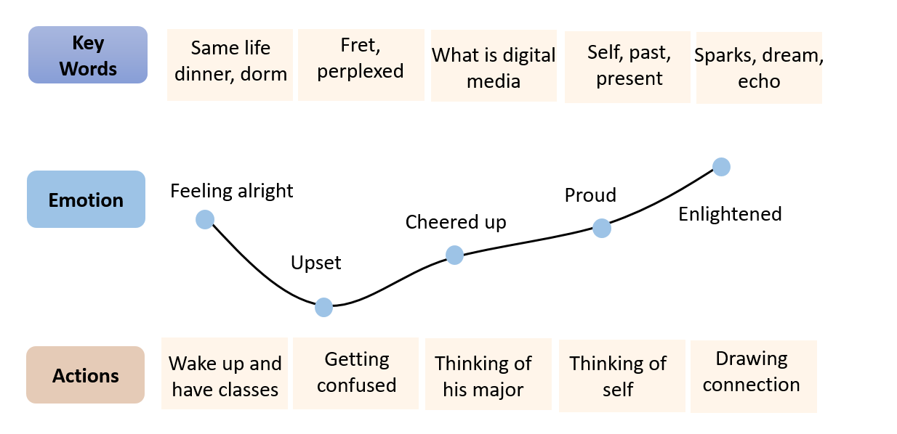
Character Design
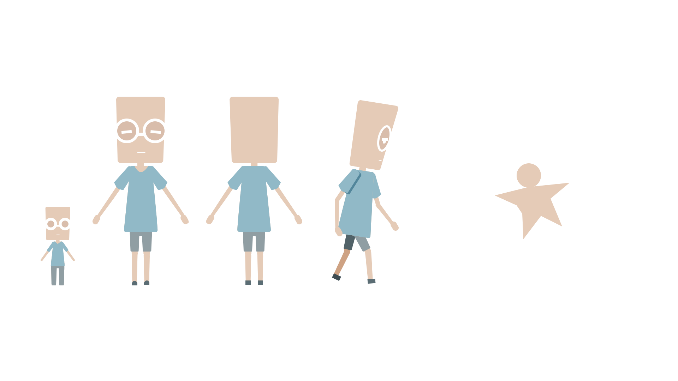
The overall character of the protagonist is big in head and small in body, because we wanted to a nerdy student. On the one hand, the student is very active, intelligent and strive to make progress. On the other hand, he has not really grasped his future, so he seems to be a bit dull and confused.
The colors of the characters are light, since we wanted to him to be introverted, diligent and thoughtful, rather than active and lively.
Storyboard Design
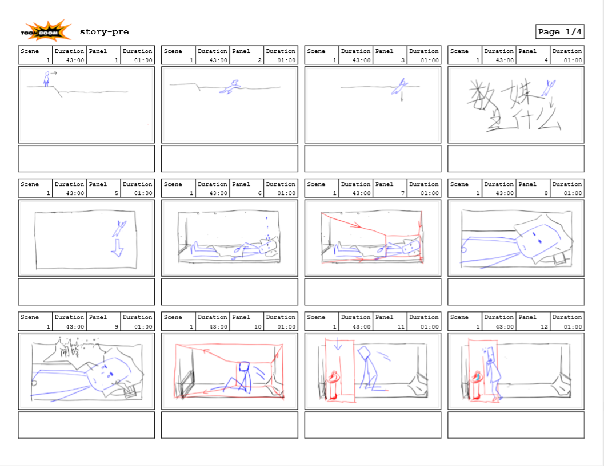
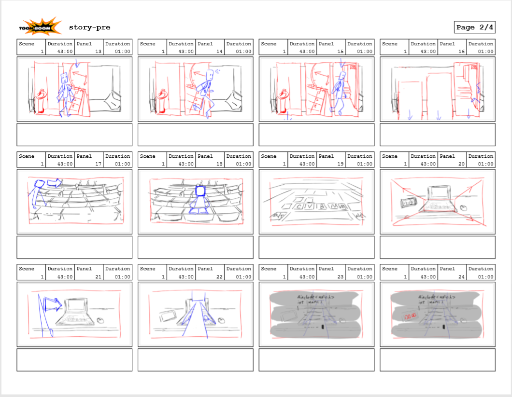
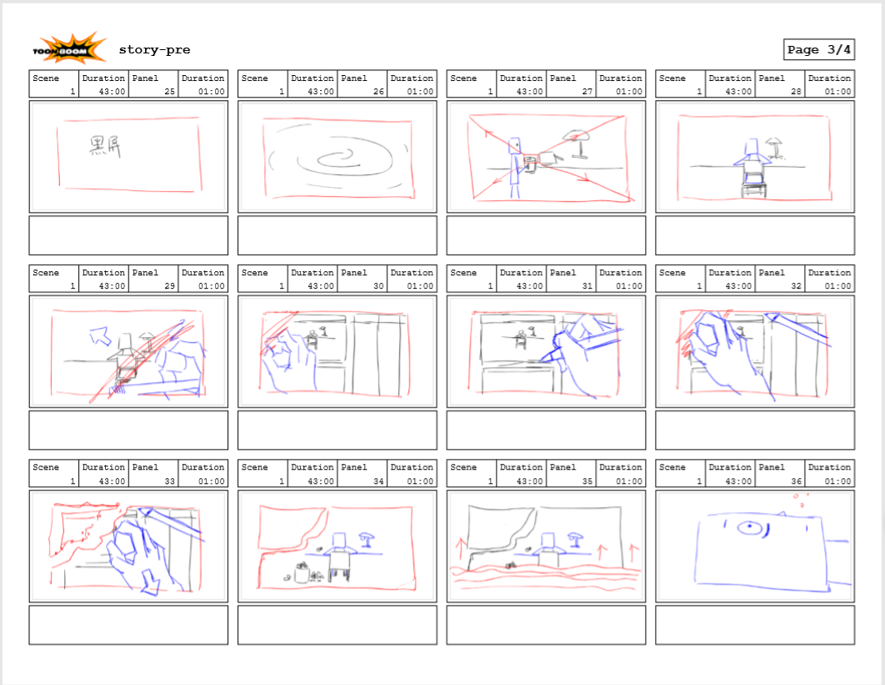
Background Design
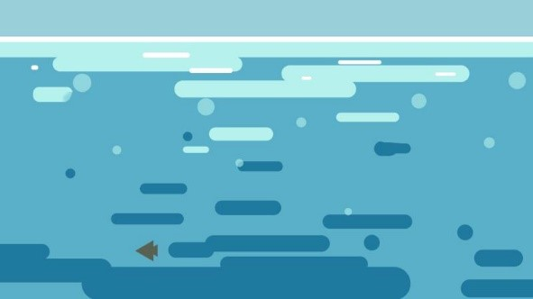
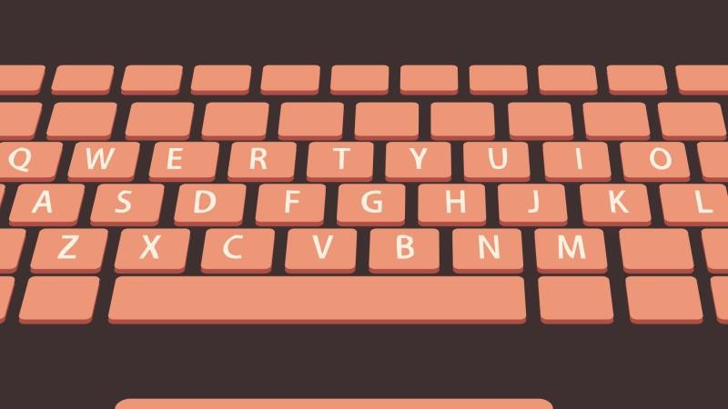
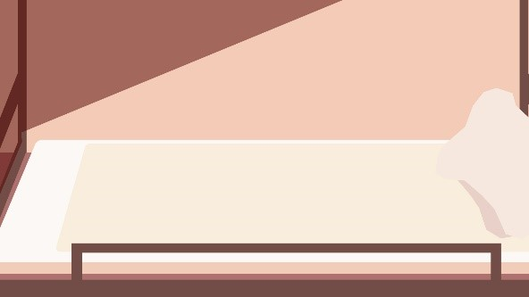
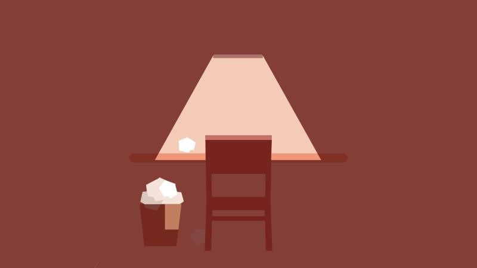
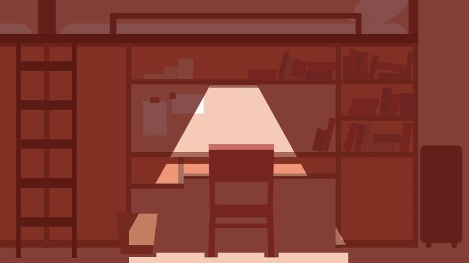
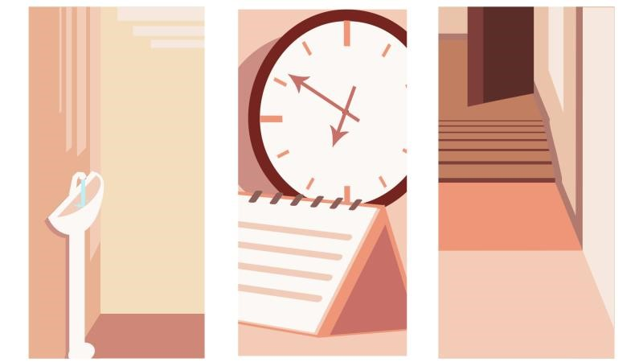
Script
Stage One
每天我过着一样的生活。从宿舍，到教学楼、食堂，再到宿舍
Every day I lead the same life. From my dorm, to classroom to the dinner and back to my dorm
有时候烦躁，这些写不完的作业到底有什么用？
Sometimes I am in a fret: what is all those endless homework for?
有时候疑问，我选择的专业又意味着什么？
Sometimes I am confused: where is my major would bring me to
有时候迷茫，我的未来我的梦究竟在何方？
Sometimes I am perplexed, where is the road to my dream
就像沉入了深深的海底，看不到前路的方向
It feels like drowning into the deep ocean and not knowing the road ahead
关于未来啊，我只知道，我走在数媒的路上
The only thing I have known about the future is I am on the road of digital media
啊？你问数媒是什么？
But, What is digital media
Stage Two
它是设计，是交互，是代码、用户、媒介、也是数字载体
Digital media is design, interaction, coding, users, medium and everything else
它让现实世界的信号，激起虚拟世界的无限火花
It makes the signals of the real world spark the infinite light of the virtual world
只需要轻轻一点，就能引发无限遐想
All it takes is one touch to arouse imagination.
在寻找和探索中，体验趣味与快乐
One can experiences fun while exploring and searching.
但我一直在想，我翘起数媒的支点是什么
But I have been wondering, where is my place to move the earth in digital media world
我读过的书，拥有的知识，从小的热爱，冒过的险，像一个个脚步，昭示我独一无二的方向
The books I have read, the knowledge I have learnt and the passion I have possessed serve as footprints in the snow, reflecting my own road.
于是我成长，阅历的积累，技术的磨练，创意的迸发，汇聚成梦想的力量，在心中翻滚，沸腾，飞扬。
As I grew up, the accumulated experience, honed technology and the burst out of creativity all gathered into the power of dreams, which rolls, boils and flies my heart.
最后，这都将成为我生命中的回响
In the end, they could become the echo of my life.
Video
Copyright © 2020.ZihuiLin All rights reserved.粤ICP备2020096109号